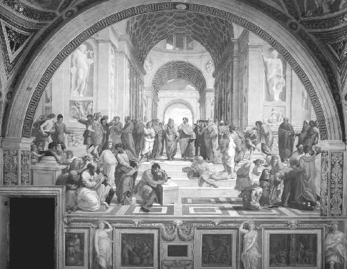
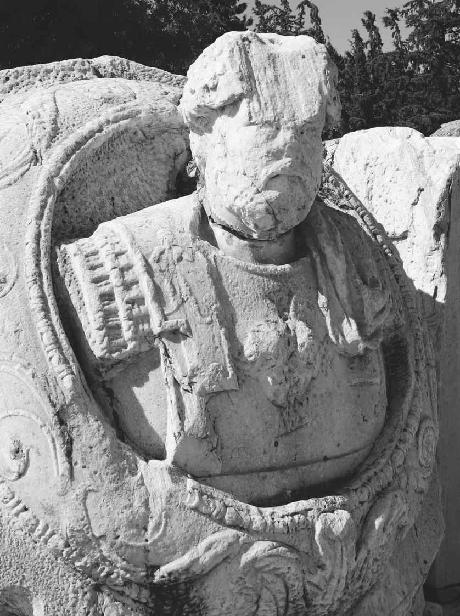
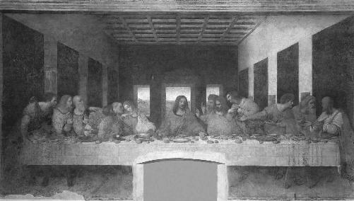

Though we are liable to forget, Western civilization was not founded as a Christian enterprise. The Ancient Greece that invented democracy, and birthed all the arts and sciences we now take for granted, never heard of Jesus. Before Jerusalem, before Rome, before Mecca, there was Eleusis. If Athens of the fifth and fourth centuries BC was the true source of Western life in the twenty-first century, then Eleusis was our first, undisputed spiritual capital. Throughout classical antiquity, the quaint harbor town was ground zero for generations of seekers. But its religion wouldn’t last forever. In the battle for the sacred legacy of the West, Eleusis was a spectacular casualty. Its demise at the hands of the newly Christianized Roman Empire in the fourth century AD marked the beginning of an identity crisis that persists to this day.
Are we Greek or are we Christian?
Under the traditional view our Greek ancestors may have built the world as we know it, but Christianity saved its soul. Like the children of divorced parents, we try not to choose favorites or take sides. And we largely ignore the fact that the Greeks managed to find salvation long before Christianity showed up—a perfectly reasonable oversight, with the former center of the Mediterranean universe now scattered in ruins. Today the archaeological site of Eleusis is little more than crumbling bits of marble and limestone. And since 1882 the excavations have only turned up more questions than answers.1 Why did the pilgrims flock to its temple for two thousand years, in search of life beyond the grave? Why was the age-old ritual performed under cover of darkness? Why was the magic potion hidden away? And why did the Christians shut it all down?
If you’re not careful, the oldest unsolved riddle in the history of Western civilization has a way of getting inside your bones. When so much of their genius has survived, it just doesn’t make sense for the religion of the people who created Western culture to simply vanish into thin air. There has to be more to the Mysteries of Eleusis, the longest running and most prominent spiritual tradition in Ancient Greece.2 Unfortunately it was shrouded in secrecy from the very beginning, leaving nothing but hints and clues about what really took place within the holy precinct. Aristotle once said the initiates came to Eleusis not to learn something, but to experience something.3 Whatever that experience was, it has successfully eluded scholars for centuries. That’s how this puzzle was designed, after all. Fragments of the strange rites and ceremonies can be reconstructed, but the main attraction remains unknown. Year after year, how were the Mysteries able to consistently deliver on an impossible promise?
If you come to Eleusis, you will never die.
A bold claim, for sure. Hard to believe nowadays. But, for some reason, our ancestors believed it. In fact they couldn’t imagine a world without the exceptional landmark. The Mysteries were said to hold “the entire human race together.”4 Life itself would be “unlivable” in their absence.5 Among all the unanswered questions about Eleusis, one inescapable fact keeps researchers glued to the obscure corner of southern Greece that spoke to millions: it stood the test of time.
Well before Jesus walked the shores of Galilee, Eleusis was a beacon of hope in a nasty age of uncertainty, when the average life expectancy was much lower than today. Half the population might not reach the age of five.6 For those who survived a traumatic childhood and managed to avoid enslavement, natural disasters, food shortages, violence, social unrest, deadly plagues, and infectious disease made for a far nastier existence than our own, with as much as 60 percent of the Greco-Roman world succumbing to the bacteria and viruses we have now largely managed to control.7 If COVID-19 offers any insight on the past, it’s the psychological and emotional toll of a pandemic, and the sense of helplessness that must have been excruciating for our ancestors. But as long as the Mysteries were celebrated once a year around the fall equinox, everything was in order. It was a foolproof formula that ran uninterrupted from about 1500 BC until AD 392, when the annual festivities were abruptly outlawed by the Roman Emperor Theodosius, a die-hard Christian.
That’s a long time for a lot of people to keep quiet, and for so little detail to leak into the historical record. But everyone who crossed the sacred threshold understood the price of admission. The word “mystery” comes from the Greek muo (μύω), which literally means “to shut one’s eyes.” Under penalty of death, all visitors were explicitly forbidden from revealing what they saw on the inside.8 Whatever happened in Eleusis, stayed in Eleusis. Frustrating as it is for modern historians, that policy served the Mysteries well. The wall of silence only fed the mystique and guaranteed fans in high places.
In its heyday the temple attracted the best and brightest Athens had to offer, including Plato. To keep his experience classified, the godfather of Western philosophy used vague, cryptic language to describe the “blessed sight and vision” he witnessed “in a state of perfection”—the climax of his initiation into “the holiest of Mysteries.”9 Like all travelers, Plato was permanently transformed by whatever he observed in Eleusis. The latest in a long line of visionaries, men and women, with exclusive access to cosmic truths. Following their sip of an unusual elixir called the kukeon (κυκεών), and a night of spectacles in the temple, each pilgrim earned the honorary title epoptes (ἐπόπτης), which means something like “the one who has seen it all.” Beyond any doubt, they claimed, death was not the end of our human journey. We do, in fact, survive the physical body. And underneath this mortal clothing, we are all immortals in disguise—gods and goddesses destined to the stars for eternity.
All that, after just one night at Eleusis?
From otherwise rational, sober people, it sounds like crazy talk.
To make sense of Plato, we have to remember how the Ancient Greeks ordinarily approached the afterlife. At the time, most people believed the soul went down to the bleak and nebulous regions of Hades. Whether it would live there forever or eventually fade away was not entirely clear, and it scarcely mattered. Death was nothing to look forward to. When Odysseus visits the land of the dead, his fallen comrade Achilles famously grumbles, “I would rather be a paid servant in a poor man’s house, and be above ground, than king of kings among the dead.”10
Unless you had been initiated into the Mysteries, of course, where seeing is believing. One inscription found on the site says, “death is for mortals no longer an evil but a blessing.”11 Pindar, perhaps the greatest lyric poet of Ancient Greece and a fellow initiate, wrote in the fifth century BC, “Blessed is he who has seen these things before he goes beneath the hollow earth; for he understands the end of mortal life, and the beginning [of a new life] given of God.”12 For Sophocles, one of the most renowned playwrights of the time, the world could be divided into those who had set foot in Eleusis, and those who had not. Just like Plato and Pindar, he stresses the visual nature of the experience: “Thrice blessed are those among men who, after beholding these rites, go down to Hades. Only for them is there life [after death]; all the rest will suffer an evil lot.”13
Without divulging the big secret, much of the ancient testimony—what little remains—hails the sublime vision that proved to be a once-in-a-lifetime event for every pilgrim.14 Clearly the Greeks had a profound religious system at their disposal. One that seems to match the grandeur and sophistication of their many accomplishments, the many gifts we happily inherited to build a civilization from the ground up. Eleusis was an enduring tradition, said to provide concrete answers to timeless doubts, and optimism in the face of oblivion. It’s unavoidable: there was real religion before Christianity, which contradicts the running assumption that Greek spirituality was rather uninformed and idiotic.
If you were taught a cartoonish version of Greek mythology in high school, or even earlier, that’s when the confusion may have begun. You were probably left wondering how the people who not only gave us the word “skepticism” (from the Greek skeptomai (σκέπτομαι), meaning “to look about carefully”), but actually practiced what they preached, could possibly believe in fairy tales. Zeus is in charge of lightning? Poseidon rules the seas? Everything evil came from Pandora’s box? If the Greeks seemed too sensible for such things, it’s because they were. Let’s give credit where credit is due.
Like some cultural Big Bang, all the greatest hits suddenly burst on the scene some twenty-five hundred years ago. Where there was chaos, the Ancient Greeks gave us meaning through history, civics, and ethics. Where there was superstition, they created the first scientific disciplines, like physics, biology, and mathematics. Their stadiums and theaters became our sports and entertainment industries. They codified law, medicine, and finance, and laid the groundwork for the technology that consumes our life. The word “technology” itself comes from the Greek techne (τέχνη), meaning “skill,” “cunning,” or “handiwork.” Social media has drawn us into a hyper-connected, global conversation that is entirely predicated on individual expression and the free exchange of ideas—fundamental rights that were virtually unheard of before the academies of Ancient Greece. Every time we open up Twitter, Instagram, or Facebook, we are tapping into that awesome legacy celebrated in Raphael’s iconic School of Athens: Plato and Aristotle, surrounded by their fellow Greek luminaries, thinking our world into existence. Are we to believe the wisdom assembled on those steps got so much right, only to come up short on the most important questions of all? Why are we here? What happens when we die? What’s the point of it all?
By and large, animal slaughter, endless libations, and formulaic prayers were the kinds of things that seemed to please the twelve gods on Mount Olympus and keep disaster at bay. And for many Ancient Greeks, that was religion. But it didn’t answer the big questions. For the level of brilliance on display in the School of Athens, bloody sacrifices to imaginary gods on far-flung hilltops wouldn’t quite do the job.

The School of Athens, painted by Raphael between 1509 and 1511, currently in the Apostolic Palace of the Vatican.
That’s where the Mysteries of Eleusis came in—just one of the many so-called mystery religions that fascinated the Mediterranean mind in the old days. For those curious souls in need of a little more substance and a little less nonsense, Ancient Greece had a full menu of spiritual alternatives that proved more satisfying than the traditional fare. At the core of the mystery religions was “an immediate or mystical encounter with the divine,” involving “an approach to death and a return to life.”15 Like the mystics that would infiltrate Christianity, Judaism, and Islam in the millennia to come, the Greeks knew the ancient secret of dying before dying. However this one-on-one meeting with God was engineered, it’s what Aristotle meant by the initiates descending on Eleusis not to learn something, but to experience something. Those inquisitive, cynical Greeks were after bona fide evidence: proof of the hereafter. They would never blindly settle for empty promises of a future life among the heavens. They had to peek behind the curtain to see for themselves whether there was any truth to the matter. For them and for us, how could authentic religion be anything less?
As one empire replaced another, the value of that experience was not lost on the Romans, who adopted the Greek temple in Eleusis as their own. Cicero, the great orator and statesman of the first century BC, recorded his take for posterity:
For it appears to me that among the many exceptional and divine things your Athens has produced and contributed to human life, nothing is better than those Mysteries. For by means of them we have been transformed from a rough and savage way of life to the state of humanity, and have been civilized. Just as they are called initiations, so in actual fact we have learned from them the fundamentals of life, and have grasped the basis not only for living with joy, but also for dying with a better hope.16
In the second century AD, the emperor Marcus Aurelius studied in Athens and was later initiated in Eleusis.17 He is reportedly the only lay person ever allowed inside the anaktoron (ἀνάκτορον), the holy of holies housed within the main temple, or telesterion (τελεστήριον). He earned the privilege. The Philosopher, as he was called, oversaw an extensive construction project to restore the site after it was nearly destroyed by the barbarian Kostovoks in AD 170. What the invaders sent up in flames, Marcus Aurelius methodically rebuilt to Roman standards, ensuring the Mysteries would never again suffer another desecration. Dwarfed chunks of the forty-two columns that once supported the 52-by-52-square-meter sanctuary can still be seen. Roughly three thousand people would have crowded onto the steps lining its interior to witness the secrets they had prepared up to a year and a half to observe.18 Only on the second visit to Eleusis did a prospective initiate or mustes (μύστης) actually enter the sanctuary to become a full epoptes.19
To keep profane eyes off the sacred affair, the Philosopher also built a monumental gateway of Pentelic marble and a vast courtyard at the entrance to the site, now known as the Greater Propylaea. An imposing, larger-than-life bust of Marcus Aurelius has survived all this time, with the defaced image of a serpent-headed Gorgon emblazoned on the Philosopher’s chest. The decapitated monster was a common way of warding off evil in those days.20 A stern warning to any future looters: this is sacred land.

The colossal bust of Roman emperor and patron of the Mysteries, Marcus Aurelius (121–180 AD), beside the former Greater Propylaea at the modern-day entrance to the archaeological site of Eleusis. The four points of the Christian cross can be seen around the head of the Gorgon that once projected from the emperor’s chest.
Courtesy of the Archaeological Museum of Eleusis, Ephorate of Antiquities—Western Attica (© Hellenic Ministry of Culture and Sports)
For a time it worked. Until Christianity gathered enough steam to deliver the death blow. The Gorgon would eventually be smashed in, replaced by a giant cross, carved with pleasure directly into Marcus Aurelius’s heart. The soldiers of Christ had a message of their own: this is godless land, polluted by demons. It is the tiniest example of a disturbing period in history that is only now receiving honest critical attention. Catherine Nixey’s The Darkening Age: The Christian Destruction of the Classical World sets the stage for our investigation:
In a spasm of destruction never seen before—and one that appalled many non-Christians watching it—during the fourth and fifth centuries [AD], the Christian Church demolished, vandalized and melted down a simply staggering quantity of art. Classical statues were knocked from their plinths, defaced, defiled and torn limb from limb. Temples were razed to their foundations and mutilated.… The violent assaults of this period were not the preserve of cranks and eccentrics. Attacks against the monuments of the “mad,” “damnable” and “insane” pagans were encouraged and led by men at the very heart of the Catholic Church. The great St. Augustine himself declared to a congregation in Carthage “that all superstition of pagans and heathens should be annihilated is what God wants, God commands, God proclaims!” 21
When the once hallowed walls of Eleusis were trampled in AD 395, the Visigoths may have placed the dynamite, but the Church lit the fuse. Following Constantine’s blessing earlier in the century, Emperor Theodosius had already made Christianity the official state religion of the Roman Empire in AD 380. Twelve years later he proclaimed the Mysteries illegal, drawing a line in the sand. Civilization would eventually reap the secular benefits of all things Greek, but from then on, Christianity would serve as the default faith of the Western world. When it came to spiritual matters, best to pretend those Greek infidels and their satanic rituals never existed. For a secret religion like Eleusis that refused to keep written records, the extinction was swift and thorough. Before the end of the fourth century AD, total victory was declared by the early Church Father Saint John Chrysostom: “The tradition of the forefathers has been destroyed, the deep rooted custom has been torn out, the tyranny of joy [and] the accursed festivals … have been obliterated just like smoke.”22
From the late fourth century AD until about two hundred years ago, the history of Christianity and the history of the West are essentially one and the same: the crowning of Charlemagne by Pope Leo III as the Imperator Romanorum and Father of Europe in St. Peter’s Basilica on Christmas Day in 800, kicking off a long line of Holy Roman Emperors that would last until 1806; the East-West Schism of 1054 between the Orthodox Patriarch of Constantinople and the Catholic Church in Rome, forever dividing Europe in half; the Crusades that preceded the Renaissance, when the rediscovery of the Classics would lead to the Reformation and Counter-Reformation. In the Age of Discovery from the fifteenth to the end of the eighteenth centuries, Christianity left Europe and the Near East behind, becoming the indomitable global brand it is today. Missionaries were dispatched to every corner of the planet to convert local indigenous groups in Africa, Asia, and Latin America. Since there was no real separation between Church and state, the memory of Jesus and the hope for his imminent return were the guiding force behind it all. Especially in America, the ultimate blank slate for Christians. The colonies were flooded with Protestant denominations of every stripe, seeking the spiritual freedom to worship their version of Jesus. Well into the nineteenth century, the doctrine of Manifest Destiny declared Anglo-Saxons a superior race, chosen by God to bring “Christianity to the American continents and to the world.”23
It’s this legacy we see celebrated in Leonardo’s Last Supper. The moment Jesus is said to have offered himself to his closest friends in the form of bread and wine. A foreshadowing of the crucifixion he would endure the following day, according to tradition, for the salvation of all mankind. This intimate dinner became Christianity’s defining sacrament, the Eucharist. “Do this in memory of me,” the Gospels record. It is a moment reenacted to this day, multiple times per day, in churches on every continent for hundreds of millions of faithful. For believers and nonbelievers alike, Jesus and his early followers single-handedly changed the course of history.
If only one image could tell the story of our humble origins, would it be The School of Athens or The Last Supper? Two of the most recognized paintings of all time. Two very different pictures of our past. Once again, are we Greek or are we Christian? Where does the Church end, and where does the state begin?
What better disconnect than the swearing in of an American president? In recent times all the pomp and circumstance takes place on the western front of the United States Capitol Building, an explicit homage to the Greco-Roman Pantheon in Rome. Its creator wanted to link “the new republic to the classical world and to its ideas of civic virtue and self-government.”24 At the far end of the National Mall, past the Egyptian obelisk, Abraham Lincoln monitors the inauguration from his gleaming replica of the Parthenon that sits atop the Acropolis in Athens. Again, the architect felt “a memorial to a man who defended democracy, should be based on a structure found in the birthplace of democracy.”25 Surrounded by neoclassical marble on all sides, the same pagan marble those Christian hordes tried to erase from memory over sixteen hundred years ago, the presidents raise their right hands and swear the oath of office … on a Bible. For good measure the last three presidents have actually used two Bibles. After Kennedy’s assassination, Lyndon B. Johnson was sworn in aboard Air Force One on a Roman Catholic missal. Naturally none of this is mandated by the United States Constitution. It’s just that old identity crisis rearing its head.
It may all seem insignificant, but at the root of this Greek vs. Christian debate are some really profound questions. Are we a people of reason or faith? Is our society founded on science or religion? Whether the issue is climate change, reproductive rights, or a global pandemic, that stark divide between The School of Athens and The Last Supper continues to frame the national conversation on matters of life and death. During protests over the unprecedented country-wide lockdown in April 2020, a green tractor-trailer pulled up to the Pennsylvania State Capitol, horn blaring, a defiant slogan freshly painted on the hood: “Jesus Is My Vaccine.”

The Last Supper, painted by Leonardo da Vinci between 1495 and 1498, currently in the refectory of the Convent of Santa Maria delle Grazie in Milan, Italy.
Over twenty-five hundred years into this experiment we call the West, is there any chance of reconciling the two competing worldviews that clashed so dramatically at the end of the fourth century AD? If so, then, as with any good compromise, there will be plenty of disappointment on both sides. People of reason may have to concede that modern science has its limits. Not everything of value can be weighed and measured. People of faith may have to admit that we can no longer afford legend over history, or obedience over curiosity. In a rapidly accelerating world Big Religion has failed to keep up with a younger generation that prefers fact over fiction. But Big Science and Big Technology may be going too fast, distracting us from the ancient search for meaning that defined the original religion of Western civilization. How do we bridge the gap?
The whole point of this investigation is to test a crackpot theory that has been widely ridiculed and even censored by the academic establishment. When one ill-fated classicist by the name of Carl Ruck at Boston University took charge of the pagan continuity hypothesis with a psychedelic twist in the late 1970s, he started by claiming that the sacramental potion known as the kukeon was a type of visionary brew. And that the inviolable secrecy surrounding the Mysteries of Eleusis had everything to do with protecting the psychedelic recipe that guaranteed immortality to the Greek-speaking world. When this hypothesis first appeared, in The Road to Eleusis, forty years ago, before I was even born, it was definitely the wrong idea at the wrong time. Exactly two decades had elapsed since Aldous Huxley’s clarion call for the new Reformation in 1958. And during that time psychedelics had gone from a respectable subject of intellectual pursuit among British gentlemen like Huxley to one of the most polarizing issues in America. Not to mention the fact that they were completely illegal. Even the top universities in the country couldn’t escape the long arm of the War on Drugs.
But that was only half the heresy. The Greeks had to invent the psychedelic Eucharist. And then the Christians had to give it shelter. So to answer the second of the two questions baked into Huxley’s revolutionary prediction about the “revival of religion,” the same classicist at Boston University would later claim that some version of the Hellenistic sacrament had indeed been incorporated into the fledgling faith by Greek-speaking pockets of paleo-Christians all over the Roman Empire. And that their original Eucharist was therefore intensely psychedelic. Like Erasmus and Martin Luther’s obsession over the Greek of the New Testament, this controversial analysis of the actual sacrament that sustained the earliest Christian communities was ultimately an attempt to rediscover the true origins of the world’s biggest religion, and the real vision of the most famous human being who ever lived. As the Encyclopedia Britannica makes clear, “Recovering the classics was to humanism tantamount to recovering reality.”26 And the modern-day attempt leads to a conclusion no less groundbreaking than the firestorm unleashed by Luther during the Reformation of the sixteenth century.
When we look at The Last Supper, maybe we’re not looking at Christianity’s founding event. Maybe we’re getting a glimpse of the mysterious religion that was practiced by Plato, Pindar, Sophocles, and the rest of the Athenian gang. And just maybe this is how our identity crisis comes to a dramatic end: with a psychedelic plot twist. Rather than starting a new religion, was Jesus simply trying to preserve, or copy, the “holiest of Mysteries” from Ancient Greece? Or, more precisely, is that what his Greek-speaking followers wanted to believe? If so, that opens up a can of worms, making Jesus more of a Greek philosopher-magician than a Jewish Messiah. It means that the Jesus behind Leonardo’s table really belongs on the steps of The School of Athens with his fellow initiates. Because the earliest and most authentic communities of paleo-Christians would have looked to the miracle worker from Nazareth as someone who knew the secret that Eleusis tried so desperately to conceal for millennia. A secret that could easily win new converts to the faith. But a secret the Church would later try to suppress, according to the theory. And a secret that would render all the infrastructure of today’s Christianity virtually obsolete, uprooting 2.42 billion adherents worldwide.27
Back in the Garden of Eden, maybe the forbidden fruit was forbidden for a reason. Who needs the fancy building, the priest and all the rest of it—even the Bible—if all you really need is the fruit?